Обновлённые изображения L2
Оригинальные иконки из предоставленных ассетов: 1073. Готовые изображения оружия, брони и щитов сохранены.
Иконки используют исходные пиксели и цвета клиента. Пять торговых сцен и эмблема группы — новые иллюстрации.
Валюты, свитки и самоцветы
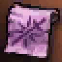
scroll_A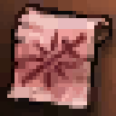
scroll_B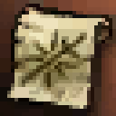
scroll_C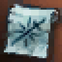
scroll_D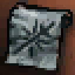
scroll_S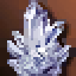
crystal_D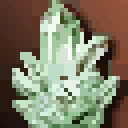
crystal_C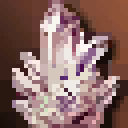
crystal_B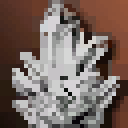
crystal_A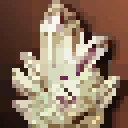
crystal_Scraft_gem_Dcraft_gem_C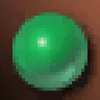
craft_gem_Bcraft_gem_Acraft_gem_Sscroll_noGrade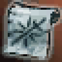
blessed_noGradeblessed_weapon_noGrade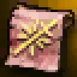
safe_weapon_noGrade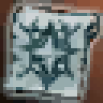
blessed_armor_noGrade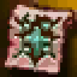
safe_armor_noGrade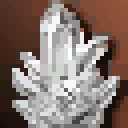
crystal_noGradecraft_gem_noGrade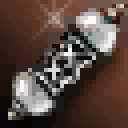
blessed_spiritshot_noGradeblessed_Dblessed_weapon_Dsafe_weapon_Dblessed_armor_Dsafe_armor_D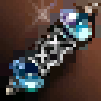
blessed_spiritshot_D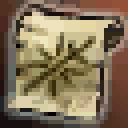
blessed_Cblessed_weapon_Csafe_weapon_C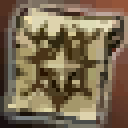
blessed_armor_Csafe_armor_C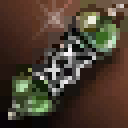
blessed_spiritshot_C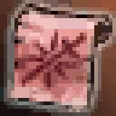
blessed_Bblessed_weapon_Bsafe_weapon_B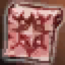
blessed_armor_Bsafe_armor_B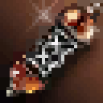
blessed_spiritshot_B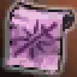
blessed_Ablessed_weapon_A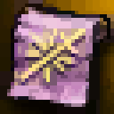
safe_weapon_A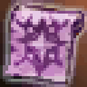
blessed_armor_A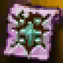
safe_armor_A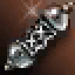
blessed_spiritshot_A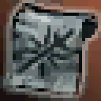
blessed_Sblessed_weapon_S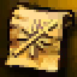
safe_weapon_S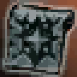
blessed_armor_S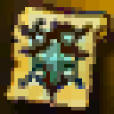
safe_armor_S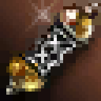
blessed_spiritshot_Sscroll_S80blessed_S80blessed_weapon_S80safe_weapon_S80blessed_armor_S80safe_armor_S80crystal_S80craft_gem_S80blessed_spiritshot_S80scroll_S84blessed_S84blessed_weapon_S84safe_weapon_S84blessed_armor_S84safe_armor_S84crystal_S84craft_gem_S84blessed_spiritshot_S84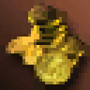
gold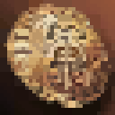
aaКамни жизни
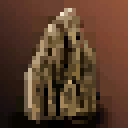
lifestone_C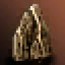
lifestone_B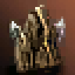
lifestone_A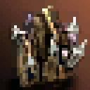
lifestone_S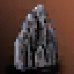
lifestone_mid_C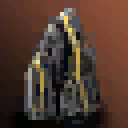
lifestone_mid_B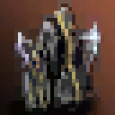
lifestone_mid_A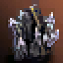
lifestone_mid_S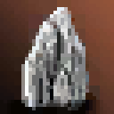
lifestone_high_C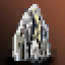
lifestone_high_B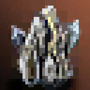
lifestone_high_A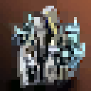
lifestone_high_S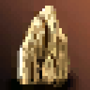
lifestone_top_C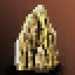
lifestone_top_Blifestone_top_Alifestone_S80lifestone_mid_S80lifestone_high_S80lifestone_top_S80lifestone_noGradelifestone_mid_noGradelifestone_high_noGradelifestone_top_noGradelifestone_Dlifestone_mid_Dlifestone_high_Dlifestone_top_Dlifestone_top_Slifestone_S84lifestone_mid_S84lifestone_high_S84lifestone_top_S84Атрибуты
attr_stone_earthattr_stone_darkattr_stone_holyattr_crystal_fireattr_crystal_waterattr_crystal_earthattr_crystal_windattr_crystal_darkattr_crystal_holyattr_stone_fireattr_jewel_fireattr_stone_waterattr_jewel_waterattr_stone_windattr_jewel_windattr_jewel_earth attr_jewel_holyattr_jewel_dark
attr_jewel_holyattr_jewel_dark Печати и кристаллы души
seal_blueseal_greenseal_redsoul_red_13soul_green_13soul_blue_13
Заряды
soulshot_noGradespiritshot_noGradeblessed_spiritshot_noGradesoulshot_Dspiritshot_Dblessed_spiritshot_Dsoulshot_Cspiritshot_Cblessed_spiritshot_Csoulshot_Bspiritshot_Bblessed_spiritshot_Bsoulshot_Aspiritshot_Ablessed_spiritshot_Asoulshot_Sspiritshot_Sblessed_spiritshot_Ssoulshot_S80spiritshot_S80blessed_spiritshot_S80soulshot_S84spiritshot_S84blessed_spiritshot_S84
Расходники и яйца
egg_wyvernegg_dragonegg_ancientpotion-hp-littlepotion-hp-smallpotion-hp-mediumpotion-mp-littlepotion-mp-smallpotion-mightpotion-shieldpotion-hastepotion-focuspotion-death-whisperpotion-guidancepotion-wind-walkpotion-hp-elixirelixir-life-Aelixir-spirit-Aelixir-cp-Aelixir-life-Selixir-spirit-Selixir-cp-S
Категории дропа
goldfullpiecerecipescrolllifestoneattributesealdyecrystalmaterialconsumableherbother
Свитки ОП, пустой свиток и лак Маммона
SP Scroll (Low-Grade)SP Scroll (Medium-Grade)SP Scroll (High Grade)Blank ScrollSP Scroll: Highest GradeMammon's Varnish Enhancer
Бижутерия
blue coral ringcoral earringmithril ringomen beast's eye earringelven necklaceblessed ringnassen's earringsage's ringsage's earringsage's necklacemajestic ringmajestic earringmajestic necklacetateossian ringtateossian earringtateossian necklacedynasty ringdynasty necklacevesper ringvesper earringvesper necklacering of queen antring of coreearring of orfenring of baiumearring of antharasnecklace of valakasmagic necklacenecklace of bindingdynasty earringzaken's earringfrintezza's necklace
Недостающие предметы: готовые L2-иконки
Прежние картины не заменены. Для этих предметов собственной картины ещё не было.
Samurai LongswordBerserker BladeCrystal DaggerDemon's StaffEminence BowSharpshooterYaksa MaceFisted BladeChain HelmetKarmian CircletChain GauntletsKarmian GlovesChain GaitersChain BootsKarmian BootsChain BreastplateKarmian RobeFull Plate ShieldMystic SigilForgotten BladeHeaven's DividerAngel SlayerArcana MaceDraconic BowSarngaDragon Hunter AxeClaw of Ashton FamilyImperial Crusader HelmetDraconic Leather HelmetMajor Arcana CircletImperial Crusader GauntletsMajor Arcana GlovesImperial Crusader GaitersImperial Crusader BootsDraconic Leather BootsMajor Arcana BootsImperial Crusader BreastplateDraconic Leather ArmorMajor Arcana RobeImperial Crusader ShieldArcana SigilVesper CutterVesper SlasherVesper ShaperVesper CasterVesper ThrowerVesper SheutjehVesper RetributerVesper FighterVesper HelmetVesper Leather HelmetVesper Magic CircletVesper GauntletsVesper Leather GlovesVesper Magic GlovesVesper GaitersVesper BootsVesper Leather BootsVesper Magic BootsVesper BreastplateVesper Leather ArmorVesper Magic RobeVesper ShieldVesper SigilКоса ночного затменияКоса солнечного рассветаМеч радужного светаКлинок алой жизниКоса семи стихийМеч звёздной бездныДвуручный меч затменияЛук солнечного венцаПосох приливовПосох небесного вихряСекира древнего лесаПосох звёздной песниАрбалет кристального штормаКогти огненного дракона
Торговцы
ОружиеДоспехиБижутерияМастераМаммон